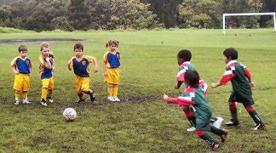
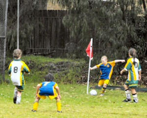
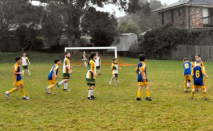
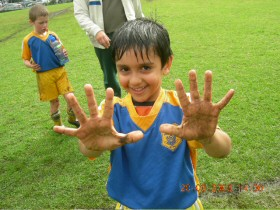
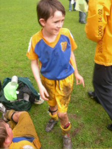
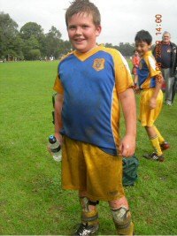
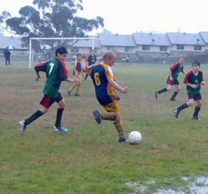
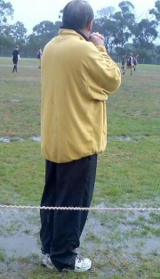

| Match Report - 20 June 2009 |
|
|
|
|
|
|
|
| U6 Purple |
North Ryde 0 - Ryde Saints United 8

|
|
|
|

Apprehensively, we all set off to Magdala in the morning, with only some of the
fields open. We were perplexed as to why, as our field was really muddy, but alas
the Purples soldiered on.
Once the team got permission from the cheersquad to run in the mud, they found great
delight in seeing it spotted over themselves.
The rain lightly set in and some of the team were a bit apprehensive to continue on...
some players dancing in the rain entertained us... but then it just bucketed down.
The game was stopped early and the muddy soaked players scattered to the nearest cars.
- Sally
|
|
|
| U6 Red C |
North Ryde Red C - Gladesville Ravens B

|
|
|
|
Twice in a row Martin got the trophy. In the second half we got three goals and
they only got one goal. At half time it rained and it was fun. We danced in the
rain.
- Luke Eastwood (Player, aged 6)
|
|
|
| U7 White |
|
North Ryde - Gladesville Ravens A
|
|
|
|
The boys ran straight onto the field. Despite the drizzle they were keen and their
eyes were wide. They were excited, and it showed. There was a number of incidents
involving deliberate movements into the large pools of mud on the ground, and a bit
of pushing and shoving. They came back to us covered in mud with big smiles on their
faces. Then we decided that we would like to play some soccer.
Thanks to our training squad mates Daniel and Jasmine for making sure we had the
numbers to play. They were both on their second super-soaked match of the day. Angus
was also keen despite an ankle injury slowing him down to about half his normal pace.
The game started slowly while both our team and the Gladesville Ravens got used to
the sluggish conditions. The Ravens played a strong team game, and managed to score
a couple of goods goals in a row. There was a lot of movement up and down the ground
from both sides, with William keen to get to any ball that went into the puddles.
Daniel came close to scoring, but at half time the Ravens were still ahead. Oranges
under umbrellas were still good, slightly less soggy than the mud in which they were
eaten.
The second half started well, and was quite an evenly matched session. NRS was looking
much stronger, with a few goods runs toward the goals by Henry and Daniel. Jasmine
belted a few line-kicks well into goal territory. Angus was vigilant in defence and
put his already sore leg in the way of a solid Raven's goal kick attempt (bravo). A
few minutes into second half Raphael scored a most awesome goal from about half-way
down the field.

Soon afterwards it started to rain heavily, and the end of the game was called.
A shame, as I had the distinct feeling that our team was coming back for a strong
finish. Nonetheless, a good muddy time was had by all. Player of the match was William.
- Virginia Lau
|
|
|
| U7 Yellow |
|
North Ryde 1 - All Saints H/Hill A 3
|
|
|
|
What an experience! The rain didn't hold the boys back, what great team spirit and
determination!
The boys worked really hard defending goals, making great runs and managing the
ball on the muddy wet grounds.
A great team effort from all our players (Jarrod, Luke A, Kaiden, Alex, Luke M
and Jay) all lining Blake up to deliver our well deserved goal. Excellent work
against a strong team finishing on 3-1.
Lets keep it up boys... stay pumped... stay focused.... and most of all keep
having an awesome time.
Encouragement award for the week went to Luke Mand and well done North Ryde.
- Caterina (Luke's Mum)
|
|
|
|
|
|
Today we arrived at Morrison Bay ready to play the top team Normanhurst Eagles. The
heavens opened as soon as we arrived... unsure if we were going to play as it was the
refs call. The boys were wet and cold but very eager to play, and threw their hands
up in the air when they heard it was game on.
The whistle blew and we were off. The rain started to ease a little. Shannon our
keeper had many great saves but finally after many attempts Normanhurst managed to
score. The boys ran hard all game in the wet and muddy conditions. They were down
1 - 0 at the break but came out firing in the second half.
A well executed kick from our 2nd-half keeper Jack saw both the ball and his right
boot soar through the air with great height and speed
Adam's footwork was fantastic sending the ball in all the right places. We had many
attempts at goals and if it wasn't for the huge mud batch in front of the Normanhurst
goals we may have scored a goal or two... talk about getting stuck in the mud.
Our defence was strong, including a super header from our champion back Tom H, who
never lets too many balls get past him. He will be missed as he jetsets overseas
soon. Have a great time Tom & family.
All boys lifted their game in the second half. It was an exciting game to watch, and
definitely worth getting wet for.
Hopefully see you all at training, weather permitting!
- Mandy Allen (Hands-on reporter)
|
|
|
|
|
|

Soccer in the rain... Soccer in the rain...
Despite the rain our team were keen and they were ready to have fun. Our team was

soon put under a lot of pressure as the Hawks had scored an early goal.
They worked really hard defending goals, making great runs and managing the ball
on the muddy wet grounds.
Soon it was half time and the Hawks led by 4-0 (1 was scored accidentally by our
own player).
The rain was easing at second half and there was apparent resurgence of the team
due to tips from the coach. The players passed the ball between them and moved the
ball into the opposition's half.
The final score was 5-0 but the game was a lot closer.
- Ekasenna Tjhauw
|
|
|
|
|
|

Wow, what a muddy wet day it was for a game of soccer on Saturday!
It was the perfect situation for a new advertisement for Napisan to be filmed. With
a change in grounds where play was permitted, our intrepid squad (both players and

parents) took off to Morrison 1 to perform their most exciting version of mud sports.
The boys' eyes gleamed with excitement at the prospect whilst the girls were slightly
indifferent however still so keen for a run.
First half saw Ben in goals doing a sterling job, with great pressure on in his half.
Thomas threw himself around the paddock and took every opportunity for the 'slide'
in brilliant defence, as did Chris. I'm sure both boys enjoyed the slalom immensely.

With Massie on attack and Benyad in defence, the Cina team was powering. Brooke was
thoroughly enjoying our game against her cousin who I might add is even taller than
Brooke!
Lucy forgot about getting dirty and threw herself in to defence and attack with Tim
having an excellent game with his persistence.
The score was nil all at half time with rain falling steadily. Great team effort from
Kim, Tony and Annie to keep the timing on track, which allowed all the players to
only be off for a few minutes each.
Brooke was in goal during second half and did one of our teams greatest saves using
her height and leaping like a gazelle. Maggie had several great runs down the side as
striker and Luke was in there with boots, mud and all
Despite many attempts at goals from both sides the game was a nil all draw which was a
great result given the conditions. Well done team and you are doing so well remembering
the off-side rule and listening to your coach.
- Annie Miller (Assistant Manager)
|
|
|
|
|
|

North Ryde Nachos (the favourites for this match) were pumped up for a win. However,
Glenhaven were not going to back down that easily. Looking a bit like rain, the
weather was not going to get to both teams.

First half
North Ryde ready to go with Captain Hayden leading them out to the pitch have a
rusty start with a few very close chances. In about the first 10 minutes it started
raining, this was no longer just a soccer game but a swimming carnival as well, both
teams not letting their guard down. Kyle and Elia running flat out on the wings. The
backs - Ben, Chris, Lewis, Luke, Tim and Que one - were rock hard - great work guys.
The mids Hayden and Daniel were very controlling. Our striker Eman had some good
chances and our goalie Nate played well in tough conditions. Despite the effort the
score had remained 0-0.
Second half
Rain, Rain, Rain, go away... Mark H said 'How many kilos of rain is there?'. The
Nachos hungrier than ever (no, not for nachos!) were determined to score even in
these torrential conditions. Their chance came. A perfect corner from Lewis straight
to Hayden and his foot connects. Goal, 1-0! Pumped up, North Ryde were determined to
score again. Another chance, Kyle runs up the wing, bends it like Burnard, a shot
from the side of the goals... he scores! Goal, 2-0! Even more difficult since the
rain had made it impossible to kick. Trying to make a powerful kick in the goal mouth
Lewis kicks, deflected. Hayden kicks, deflected. Kyle kicks, in! 3-0 the final score
and it is all over, the Nachos win.
Coach Paul is very proud of his team! Kyle voted Man of the Match. Not just a win
but a team effort and a great swimming carnival. Go NACHOS!
- Hayden (Player)
|